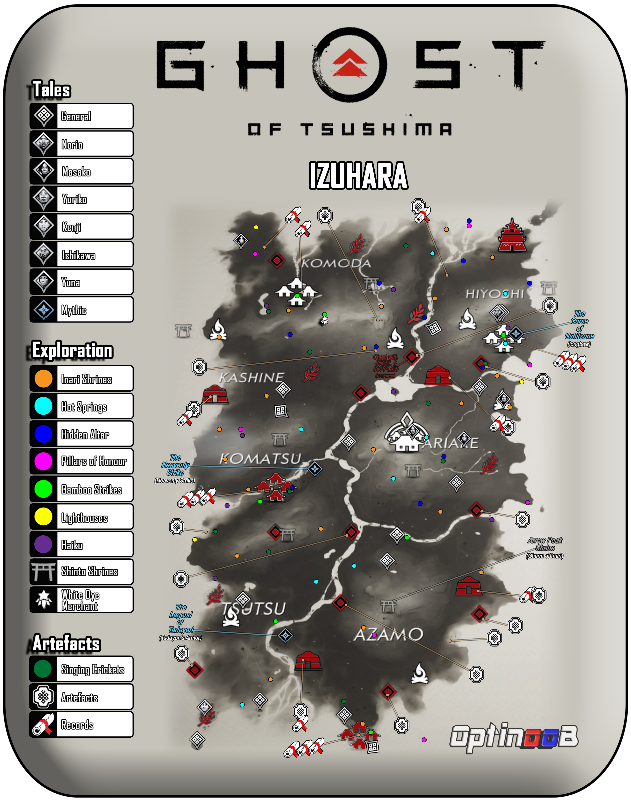
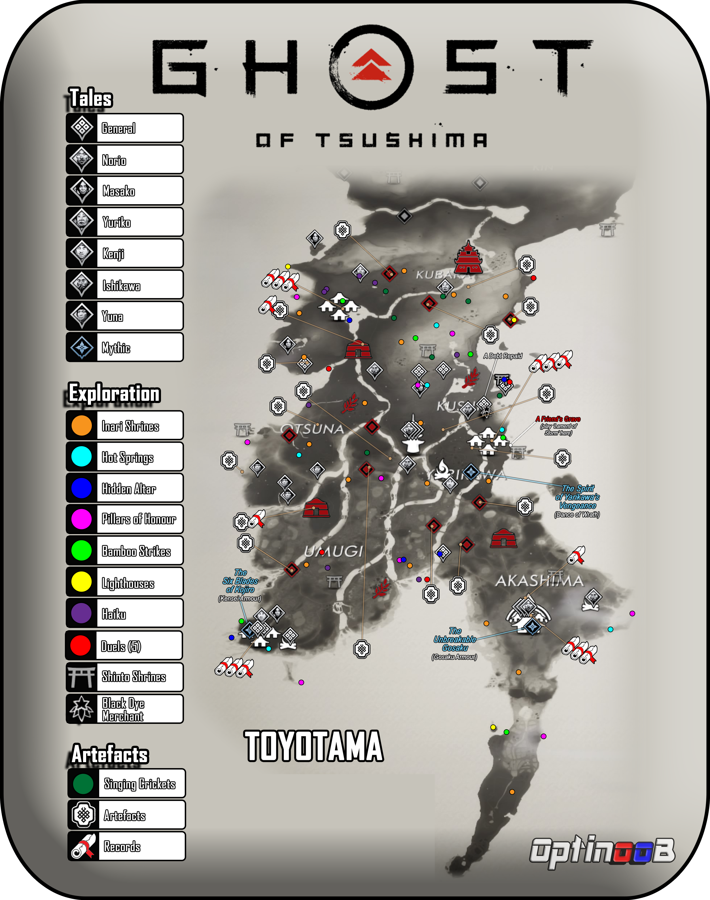
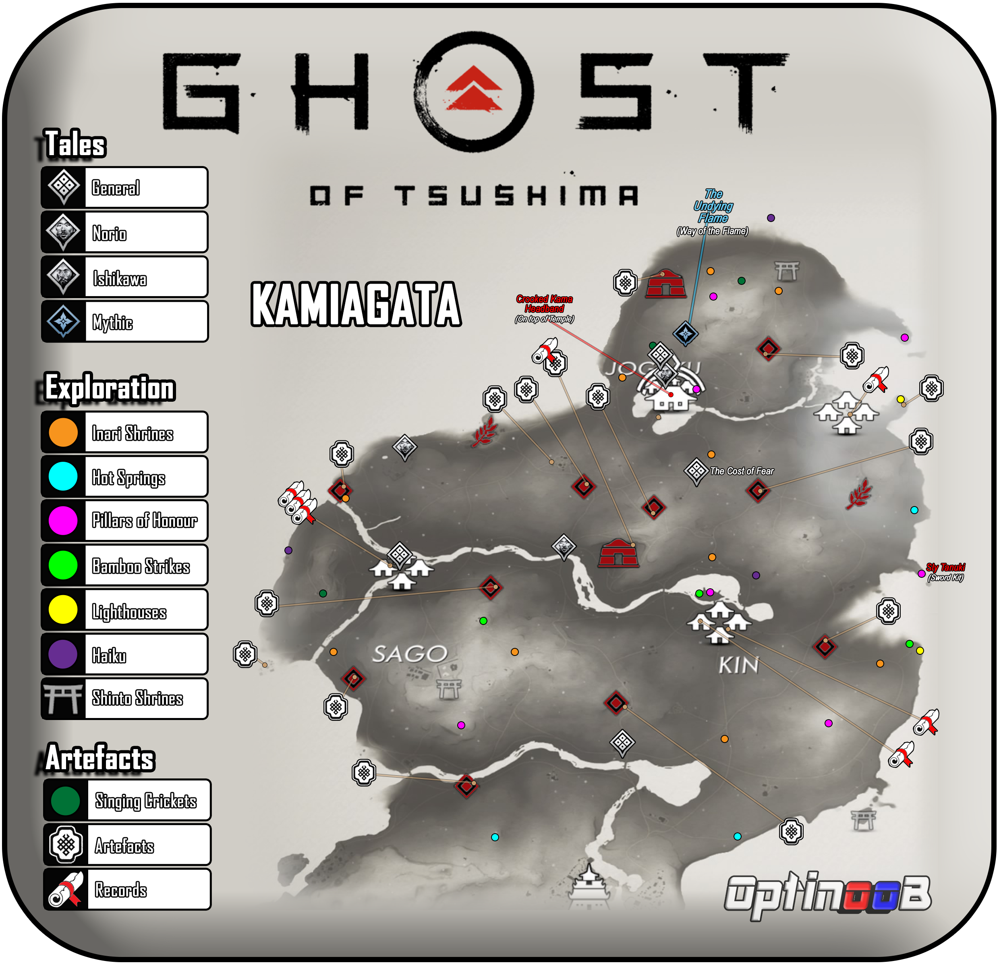

Guides
Brand
Home
History of Each Video Game
Breath Of The Wild
Ghost Of Tsushima
Sekiro: Shadows Die Twice
Elden Ring
Development Of Each Game
Breath Of The Wild
Ghost Of Tsushima
Sekiro: Shadows Die Twice
Elden Ring
Awards and Nominations
Reviews and Rating
Guides
Votes/Voting
Personal Opinion
Contact Information
Ghost Of Tsushima


